CryptoFace: End-to-End Encrypted Face Recognition
Computer Vision over Homomorphically Encrypted Data
CVPR 2025 Tutorial
June 12, 2025
Face Recognition
Face recognition integrates into daily practical applications

deep Face recognition: to learn discriminative features
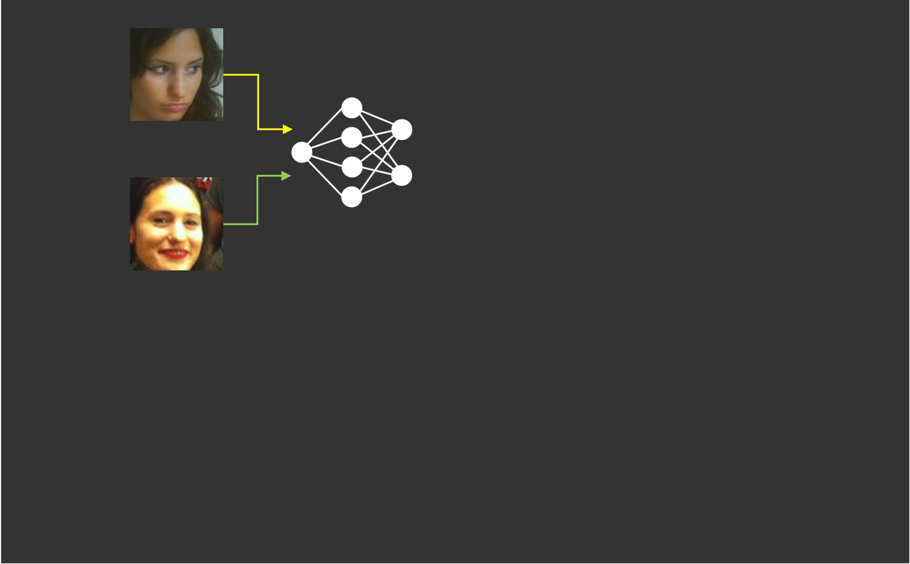
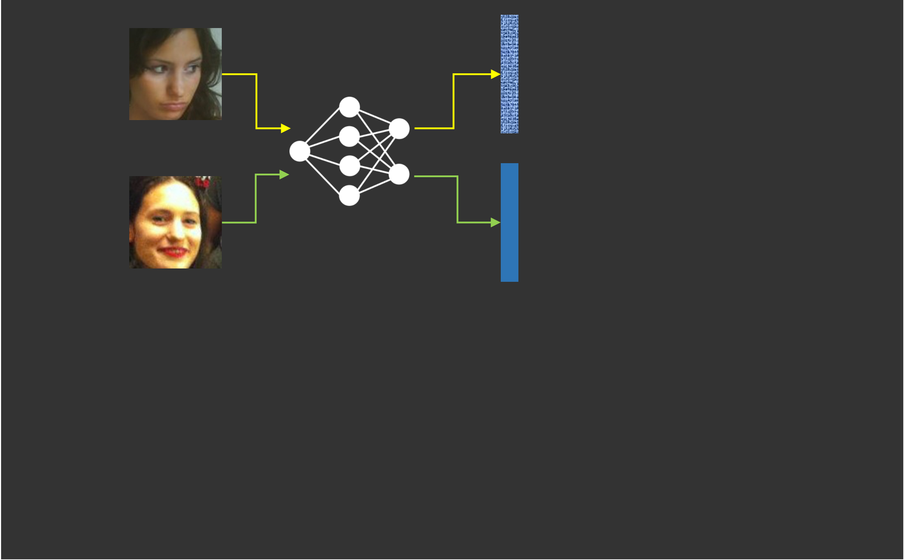
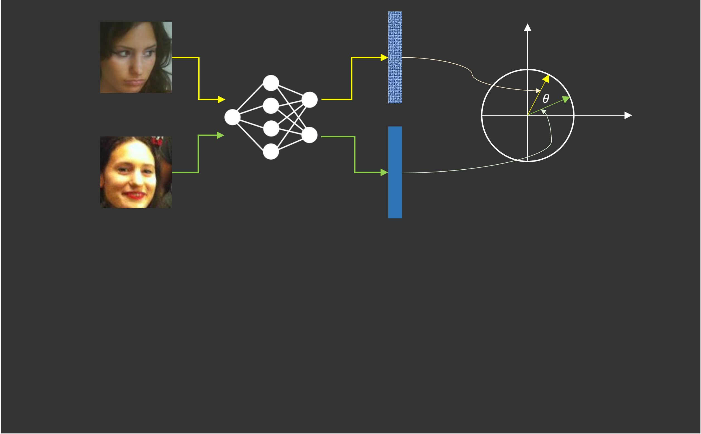
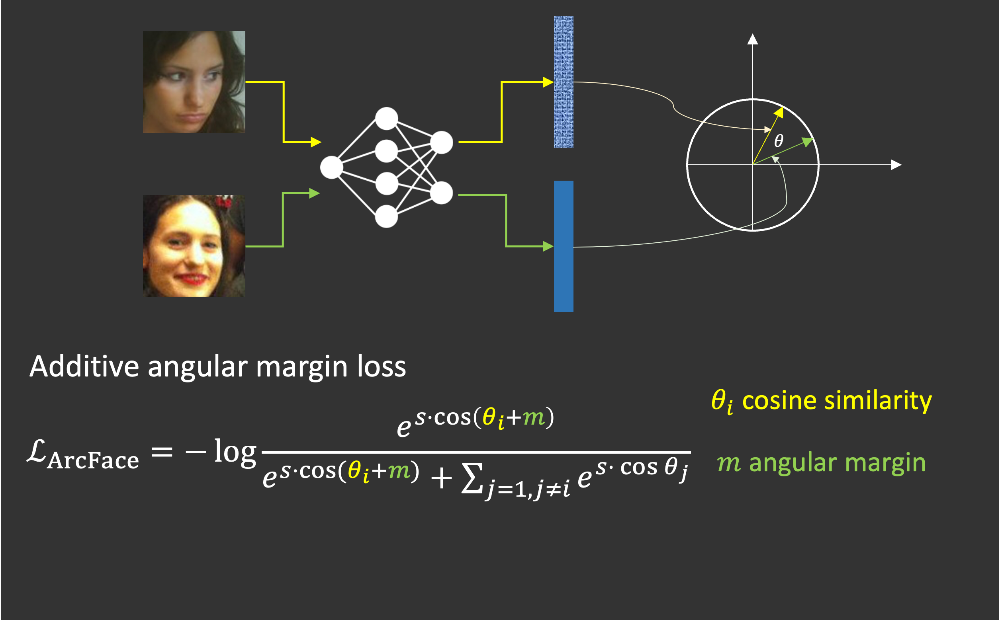
- Feature extraction: use the same neural network to extract features of two face images
- Comparison: use cosine similarity or normalized L2 distance
- Training face recognition models: adopt margins in Cross Entropy loss to maximize identity separability
What are the privacy and security risks in Face Recognition?
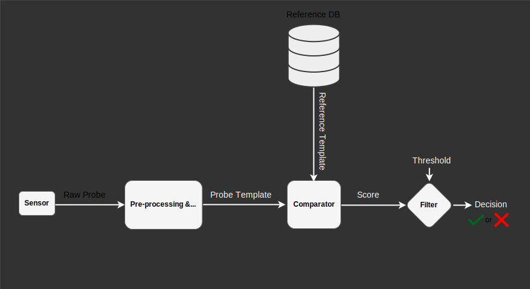

CryptoFace: End-to-End Encrypted Face Recognition
Encrypting Feature or Image?
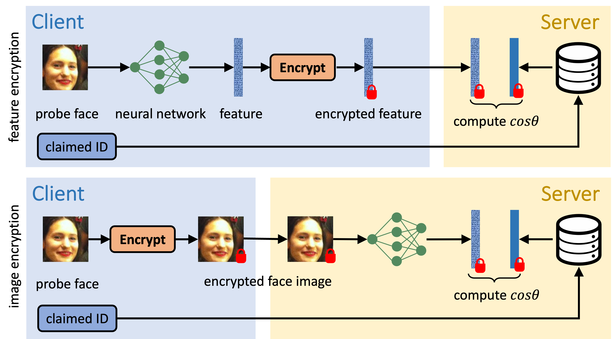
- How to design a secure face recognition system?
- Security: more secure under attacks
- Efficiency: faster inference with FHE
- Performance: better verification or identification accuracy
Encrypting Feature with FHE
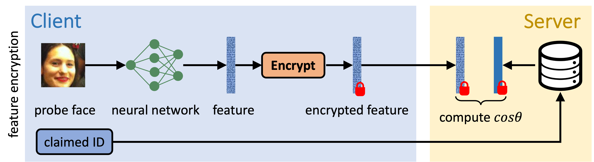
- Security: only feature protection
- Efficiency: fast to compute inner-product of two vectors under FHE
- Performance: preserve performance thanks to negligible FHE noise
- Is it secure if we only protect features?
Template Recovery Attack
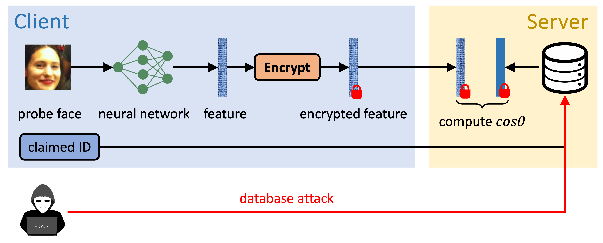
- If the client is corrupted by an adversarial, templates on the database would be stolen!!!
- step 1: generate adversarial samples (features) and send them to the server
- step 2: obtain similarity scores from the server
- step 3: solve a linear system to recover templates
Template Recovery Attack
- Why feature-encryption is not secure?
- The server takes outsourced features as input
- The client is easy to manipulate these features
- A secure solution: end-to-end encrypted face recognition (CryptoFace) across all stages!
CryptoFace: End-to-End Encrypted Face Recognition
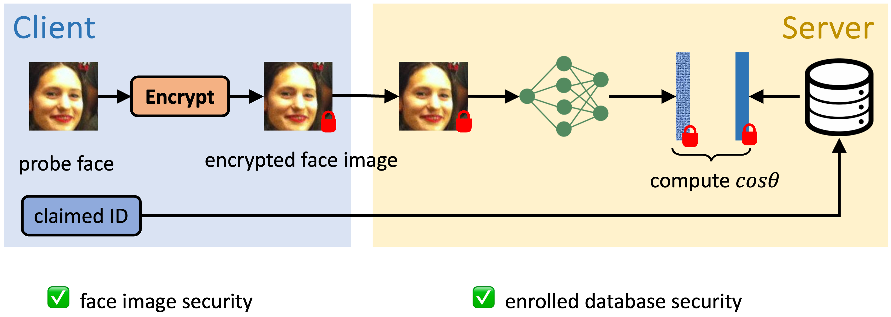
- If the client is adversarial, it may attempt to infer encrypted features stored on the server.
- The client cannot access to features or networks.
- If the server is adversarial, it may attempt to collect biometric data from the client.
- The server cannot access to the secret key.
CryptoFace: End-to-End Encrypted Face Recognition
- Security: provide security for face data and database
- Efficiency: it is slow to evaluate CNNs on encrypted images
- Performance: it is hard to preserve performance due to FHE-compatible CNNs
- To solve efficiency and performance challenges, we should co-design FHE-compatible CNNs and inference system.
CryptoFace: End-to-End Encrypted Face Recognition
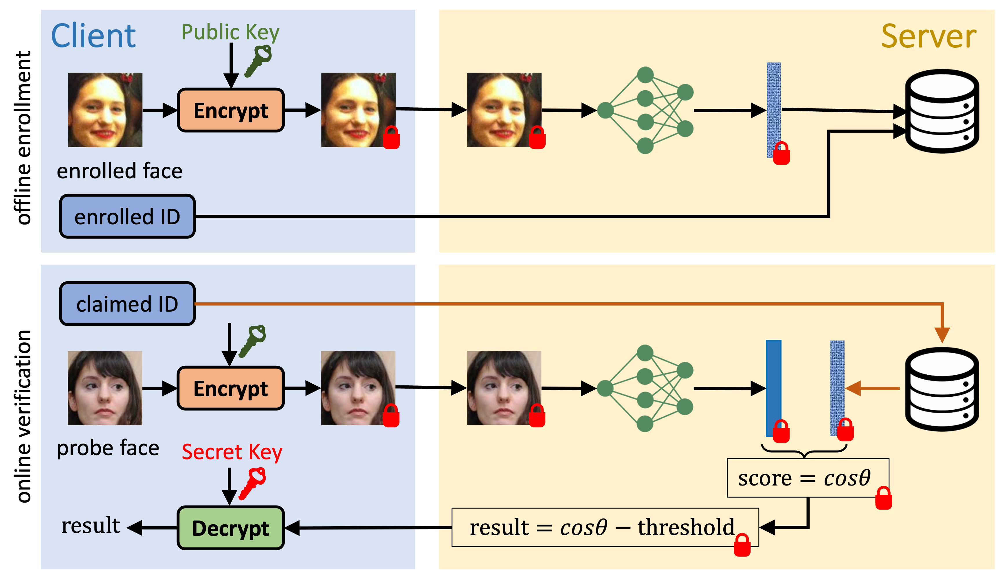
- Offline Enrollment: face image and identity
- Online Verification: probe face image and claimed identity
CryptoFaceNet: a mixture of CNNs
Convolutional Neural Networks over FHE
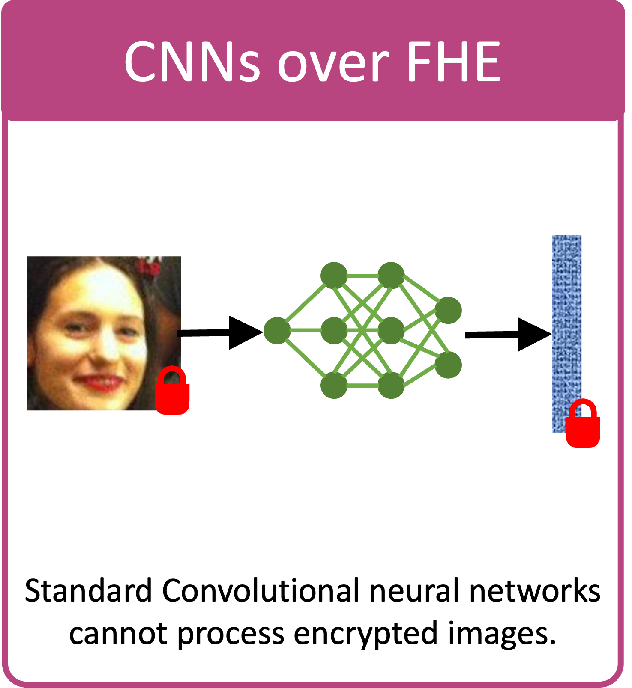
- How to design FHE-compatible convolutional neural networks?
- The objective is to reduce the complexity of rotation and multiplication.
- Packing for convolutional layers: MPCNN [1]
- Polynomial approximation for ReLU: AESPA low-degree Hermite polynomial [2]
- [1] Eunsang Lee, Joon-Woo Lee, Junghyun Lee, Young-Sik Kim, Yongjune Kim, Jong-Seon No, Woosuk Choi. Low-Complexity Deep Convolutional Neural Networks on Fully Homomorphic Encryption Using Multiplexed Parallel Convolutions. ICML 2022.
- [2] Jaiyoung Park, Michael Jaemin Kim, Wonkyung Jung, Jung Ho Ahn. AESPA: Accuracy Preserving Low-degree Polynomial Activation for Fast Private Inference.
Depth-Optimal Convolutional Block
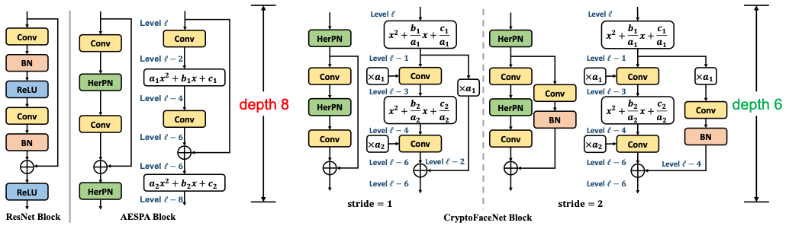
- AESPA block only consumes 8 multiplicative levels.
- CryptoFaceNet block is a shifted AESPA block and fuses polynomial coefficients to convolutional weights. CryptoFaceNet reduces levels by 2.
Mixture of Shallow Patch CNNs
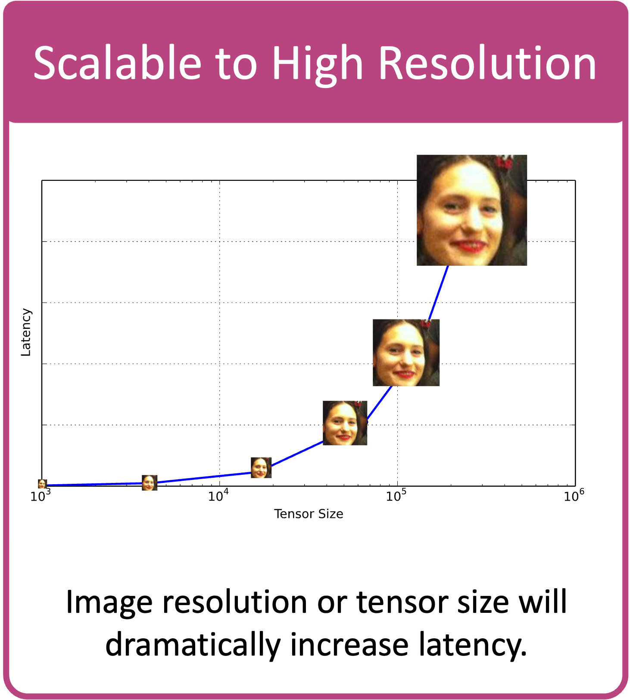
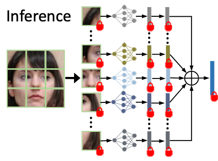
- Shallow patch CNNs (PCNNs) consume less levels.
- The mixture of PCNNs can be evaluated in parallel under FHE.
Mixture of Shallow Patch CNNs
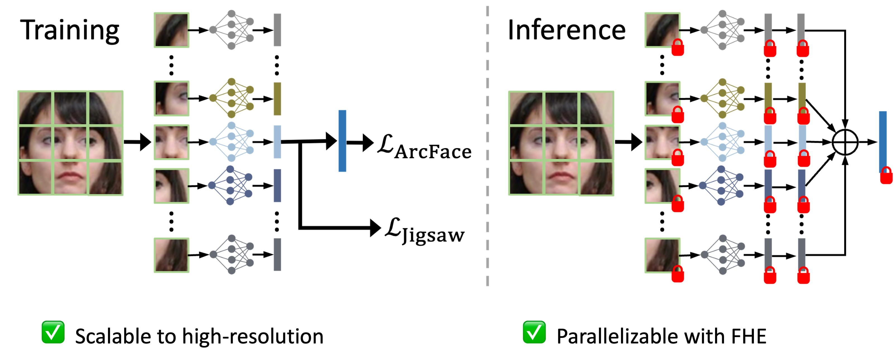polynomial approximation for similarity measure
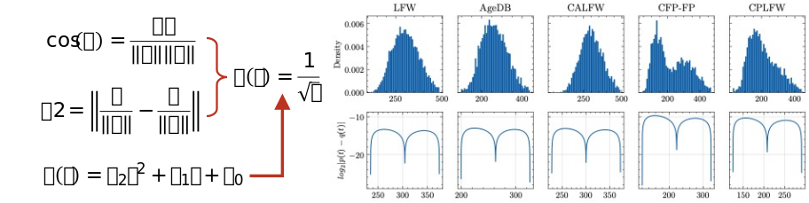CryptoFace evaluation on standard face datasets
Encrypted Face Recognition Evaluation
Hardware & Software
- Amazon AWS, r5.24xlarge
- 96 CPUs, 768 GB RAM
- Microsoft SEAL, 3.6
Encrypted Face Recognition Evaluation
| Approach | Resolution | Backbone | 5 Datasets | Latency(s) | Memory(GB) | ||
|---|---|---|---|---|---|---|---|
| Network | Params | Boot | Average Accuracy1 | ||||
| MPCNN | 64x64 | ResNet32 | 0.53M | 31 | 85.60 | 7,367 | 286 |
| 64x64 | ResNet44 | 0.73M | 43 | 89.64 | 9,845 | 286 | |
| AutoFHE | 64x64 | ResNet32 | 0.53M | 8 | 82.69 | 4,001 | 286 |
| CryptoFace | 64x64 | CryptoFaceNet4 | 0.94M | 1 | 89.42 | 1,364 | 269 |
| CryptoFace | 96x96 | CryptoFaceNet9 | 2.12M | 1 | 90.99 | 1,395 | 276 |
| CryptoFace | 128x128 | CryptoFaceNet16 | 3.78M | 1 | 91.46 | 1,446 | 277 |
- Average Accuracy: the average one-to-one verification accuracy across five face datasets, ie LFW, AgeDB, CALFW, CPLFW, CFP-FP↩
7.2x speedup (2.7 hours → 23 mins), while preserving accuracy (89.64 vs 89.42)
reduce memory footprint by 17G
near-constant latency across different resolutions
Computational Cost Per Operation
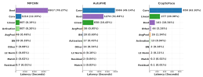
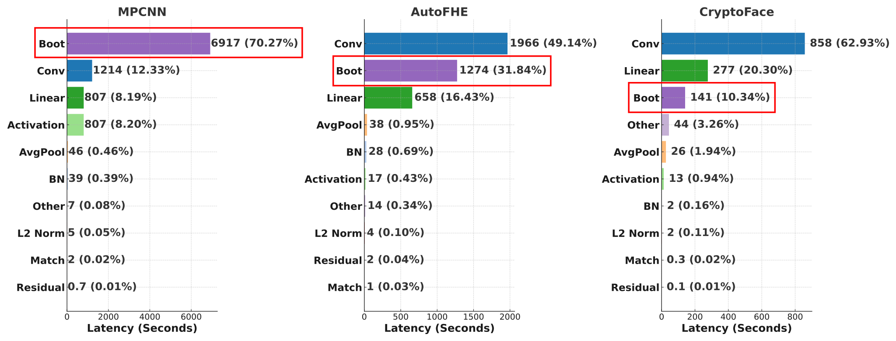
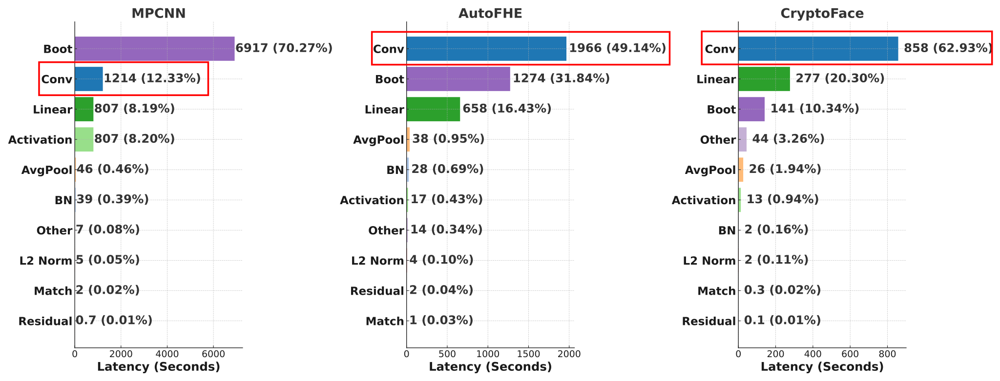
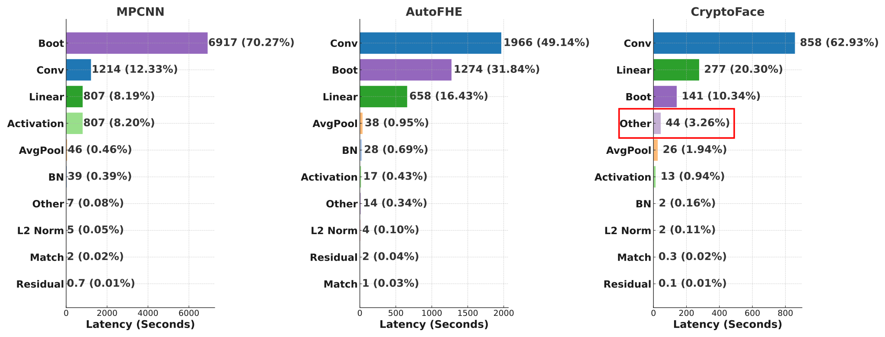
CryptoFace speeds up inference and improves verification accuracy.
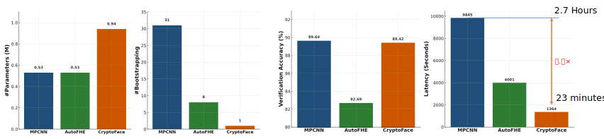CryptoFace is scalable to high resolution
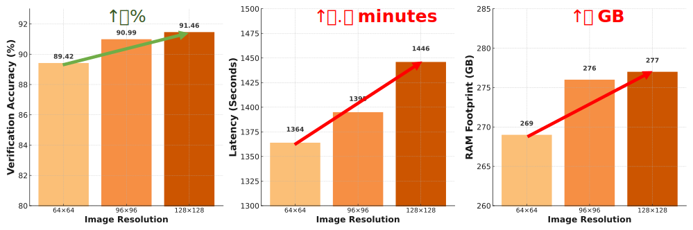Evaluation on IJB-B and IJB-C
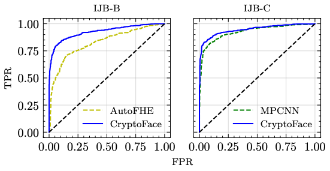Summary and Takeaways
- CryptoFace is the first end-to-end encrypted face recognition.
- CryptoFaceNet is efficient and scalable homomorphic architecture.
- End-to-End Secure Face Recognition system demonstrates security, efficacy and good performance on encrypted benchmarks.